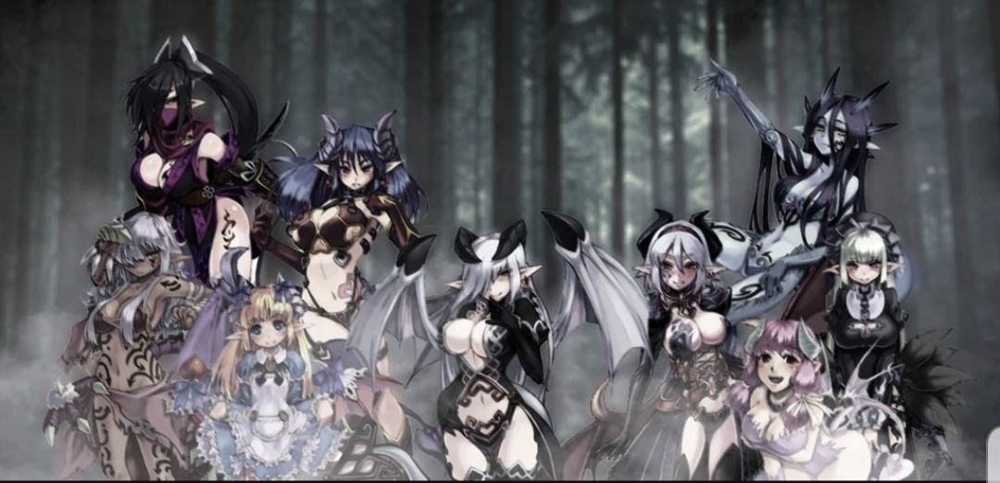
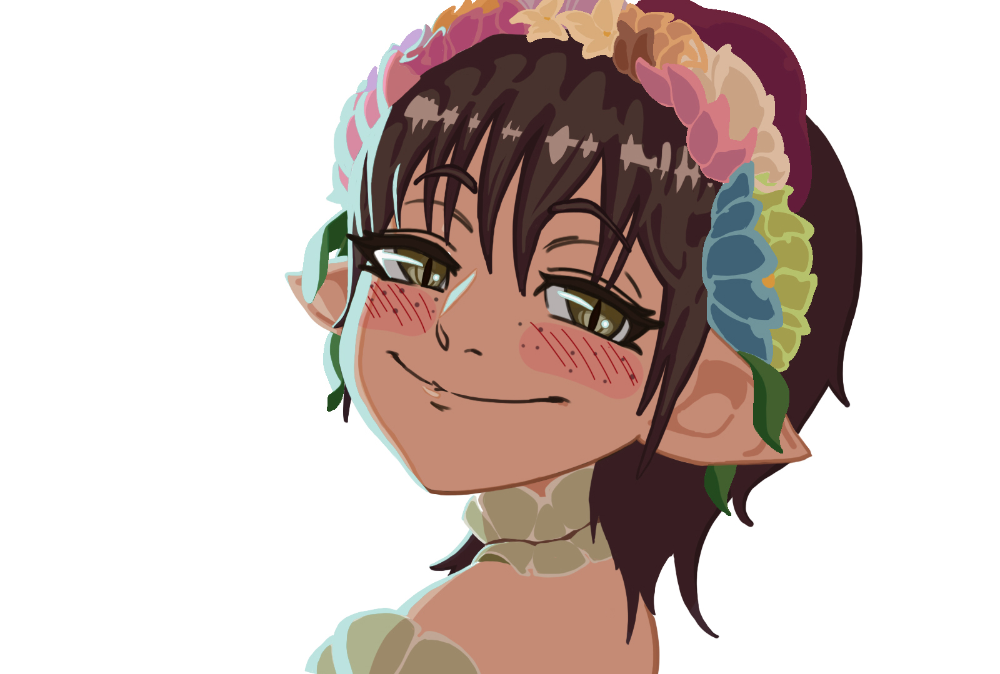

Monster Girl Encyclopedia World is an alternate fantasy world where their world is much like the world that we live within ourselves but with a twist and a safer world all together.
For my comrade,
Taking into consideration the facts and characteristics that make up the person of Jacob Smith, I have surmised that the individual in question would like and prefer one and singular wife. Out of all 217 Monster Girl Species, the Demi-Human species of Troll would be best suited to the Human of Jacob Smith. Troll would be the monster girl for Jacob, for she is calm, gentle, intelligent, helpful, and overall pleasure to be around. Their fragrance is of lovely flowers that grow on their head, hands and feet. Trolls are well attuned and are very proficient with earth elemental magic form which the plants that grow on their bodies. Those plants can be of any sort that the Troll chooses, but more often than not the plants serve as medicinal purposes and are there for emergency food if necessary. Therefore with all of this taken into account I as the Enlightened-TEA have concluded that the Troll Monster Girl Species would make the best wife for Jacob Smith.
